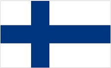

芬蘭 (FinLand)介紹

首都 Capital
赫爾辛基。(芬蘭擁有世界上緯度第二高的首都赫爾辛基，僅次於冰島首都雷克雅維克)
語言 Language
官方語言為芬蘭語(約93%人口)及瑞典語(約6%人口)。因為學校普遍都會教授英語 ，所以大部分地區也可以用英文溝通。
時差 jet lag
秋冬較台灣慢6小時；自3月底至10月底春夏季為日光節約時間，則慢5小時。
貨幣 Currency
使用歐元EUR。(北歐五國中唯一使用歐元的國家)
電壓 Voltage
為220伏特，插座及插頭均為圓形雙頭雙孔。
歷史 History
芬蘭於十二世紀中期起由瑞典統治650年。後來俄羅斯勢力崛起，1808年入侵芬蘭，1809年俄國依哈米那條約，佔領芬蘭並改為大公國，由其組成自治政府，保留芬蘭文化及語文，也未強迫改信奉東方正教。1812年赫爾辛基成為芬蘭首都，自此芬蘭發展具民族特色的文化及工商業。隨著俄國爆發十月革命，芬蘭於1917年12月6日宣布獨立。1918年的芬蘭內戰使俄國布爾什維克勢力退出芬蘭國土。在短暫的王國政體倒台後，芬蘭共和國於1919年成立。1939年，蘇聯發動了蘇芬戰爭，芬蘭被迫割地，此後，芬蘭在1941年加入德國陣營參加了對俄戰爭。二戰結束後，芬蘭成為戰敗國，主權和外交長期受制於蘇聯，沒有接受美國的馬歇爾計劃。蘇聯衰落後，芬蘭逐漸擺脫了蘇聯的影響，並於1995年加入歐盟。
國土特性 Territorial characteristics
芬蘭被譽為「千島之國」與「千湖之國」，精確來說全國共有188,000個湖泊（面積500平方米以上）和179,000個島嶼。芬蘭地勢平坦，最長的河流是凱米河，長512公里。除了湖泊之外，全國為大片森林覆蓋，佔國土面積的69%。可耕種面積較少，僅占8%。島嶼集中最多的地方是在西南部位於芬蘭大陸和奧蘭群島主島之間的群島海里。
氣候 Climate
6-8月是芬蘭的夏季，平均溫度為18℃。一般來說，夏季是到芬蘭旅游的最佳季節，這幾個月間的光照時間特別長，即便在南部沿海地區，夏季的天空也不會出現完全漆黑的情況，北部的拉普蘭地區，更有接近兩個月的時間太陽高掛不下。夏季去芬蘭旅游，還可以看到人們歡慶“仲夏節”的歡樂場面。
文化 Culture
芬蘭人發明了桑拿浴，號稱芬蘭的國粹。芬蘭諺語說：先建桑拿，再搭房屋。桑拿是為數不多的進入世界語言範疇的芬蘭詞彙之一。最傳統的桑拿房是用木材建造，其中包括蒸汽房、洗澡間和更衣室。芬蘭全國有不同大小桑拿室，平均每間房屋就有一間桑拿房。在發源地芬蘭，桑拿文化有不少不成文規矩，例如男女一同享受桑拿，有時是可以接受的，視參與者的年齡和親疏，十分難一概而論。有時男女一起，有時男女會分開進行。另外，在蒸汽房穿衣服可能被視為失禮的行為，例如在公眾桑拿有標示牌禁止穿泳裝。